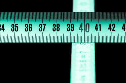

Vowels
 |
| Aaaaaagh! |
 |
The 'soft' sounds of English |
Now that you know what a phoneme actually is and have discovered
something about consonants, we can look at the
second main category: vowels. Vowels are the soft
sounds of English. If we only have the vowels in a phrase
we cannot usually understand it because the vowels alone
carry little meaning.
For example, try to understand this:
ae ou oi o e ay
If we put the consonants back, we get the more familiar: Are you coming to the party?
Vowels can, however, form minimal pairs as in, for example:
hare and here
hot and hat
put and putt
and so on so they are not without meaning in themselves.
When you produce a sound by completely or partially blocking the
air flow, you produce a consonant. If you allow the air to
flow freely, you produce a vowel.
For example, if you partially block the air flow between your tongue
and teeth and say the word zoo you can
hear that there is a voiced consonant sound at the beginning (z).
Now take away the 'z' sound and you are left with the vowel 'oo'.
Traditionally, there are 5 vowel letters in English: A, E, I, O, U but we can add Y and W to the list sometimes. Unfortunately, there are 21 vowel sounds. We need, therefore, to have a number of symbols to represent the sounds and if you do the course in transcription on this site (new tab), you will discover them all. Here, we will focus only on what vowels are and how we make them.
We saw above that the air flow is not restricted when making vowel sounds. The nature of the vowel depends on four factors:
- Tongue height (whether the tongue lies on the floor of the mouth, is near the roof or half-way up)
- Tongue position (whether the tongue is at the back, in the middle or at the front of the mouth)
- Lip rounding (whether the lips are rounded or not)
- Vowel length (how long the sound is)
Tongue height and position are quite technical areas and there is a guide on this site which explains them. Here, we will focus on lip rounding and length.
Lip rounding |
If you are pleasantly surprised and say
Oooh, that's nice!
you will have rounded your lips nicely. If, you are
unpleasantly surprised and say
Eeek!
you will have pulled your lips
horizontally. That's the effect of lip rounding vs. lip
stretching.
Get a mirror, look in it and try saying Oooh! Eeek! a few
times and you will see what's meant.
|  |
Vowel length |
Try saying these two words:
bid
bead
What difference do you notice with the vowel sound?
Click here when you have an answer.
When you said bid the sound was short. When you said
bead, the sound was much longer (and you probably stretched
your lips sideways slightly). That, of course, is why people are asked
to say cheese when posing for a photograph.
This difference in vowel length alone makes bid and
bead a
minimal pair.
In English, whether a sound is made with rounded lips or not and whether it is short or long makes a real difference to the meaning that is expressed.
 |
Two kinds of vowels |
Apart from issues of length, lip rounding and tongue position, we need to consider two other vowel characteristics. (In what follows, the transcription is provided but ignore it if you want to.)
- Pure vowels. There are 13 of these:
- The long sound in the centre of, e.g., cheese, sheep, leak, cheat etc. This is the sound you made above when you said Eeek! It is transcribed as /iː/.
- The short sound that you made when you said bid which also occurs in trip, lip, kid, slid etc. It is transcribed as /ɪ/.
- The short, lip rounded sound that occurs in put, foot, loot, shoot etc. It is transcribed as /ʊ/.
- The longer, lip rounded sound that occurs in noose, loose, shrew, clue etc. It is transcribed as /uː/.
- The short sound that occurs in dead, said, Med, led etc. It is transcribed as /e/.
- The very short sound that occurs in
about,
alive, father,
shovel etc.
It is transcribed as /ə/. If you learn to
transcribe nothing else, learn this one. The
vowel is the commonest in English (although there is no
letter to represent it) and many words, when said
quickly, use the sound. For example,
He was at the cinema
contains 5 of these sounds (underlined). This sound is called the schwa. - The long sound that you say with rounded lips in hearse, verse, nurse, search etc. It is transcribed as /ɜː/.
- The long sound that you say with rounded lips in caught, bought, sought, war, tore etc. It is transcribed as /ɔː/.
- The short sound in chat, fat, mat, lap etc. This is transcribed as /æ/.
- The short sound in blood, nub, cud, shut etc. This is transcribed as /ʌ/.
- The long sound in part, heart, dance, chant etc. This is transcribed as /ɑː/.
- The short sound you say with rounded lips in hot, shot, lot, what etc. This is transcribed as /ɒ/.
- The short sound that comes at the end of words such as happy, plenty, carry, marry etc. This is transcribed as /i/. It is formed similarly to the long sound in bead, seed, she'd etc. but it is shorter.
- Diphthongs. There are 8 of these. The sounds are
all combinations of pure vowels and if you do more in this
area, you will learn how to transcribe them. Here, an
example will do.
The sound you make in the middle of the word day is a combination of two of the pure vowels above:- the short /e/ sound in Fred, bed, head etc., plus
- the short /ɪ/ sound in bin, sin, din etc.
Put them together and you get the sound in day, say, lay, betray, decay, may etc. which is transcribed as /eɪ/.
Say the words very slowly and you will hear the sound start with one vowel and glide into the other.
| /iː/ | sleep sheep free |
/æ/ | sat hat flab |
/ɪə/ | here beer mere |
| /ɪ/ | kid slid blip |
/ʌ/ | blood cup shut |
*/ʊə/ | during furious pure |
| /ʊ/ | put foot wolf |
/ɑː/ | part large heart |
/ɔɪ/ | boy deploy toy |
| /uː/ | goose loose Bruce |
/ɒ/ | hot cot shod |
/eə/ | lair share fair |
| /e/ | Fred dead said |
†/i/ | happy navvy sally |
/eɪ/ | lace day tray |
| /ə/ | about father across |
/aɪ/ | price wine shine |
||
| /ɜː/ | verse hearse curse |
/əʊ/ | boat coat note |
||
| /ɔː/ | fought caught brought |
/aʊ/ | south house louse |
||
* This diphthong in the example words is not pronounced by all
speakers. For example, sure may be pronounced with
the diphthong as /ʃʊə/ or with a monophthong as /ʃɔː/. The
sound is produced more frequently in longer words such as
individual.
† /i/ may be transcribed as /iː/ in some analyses.
 |
Learn more about: |
 |
Take a test |
To make sure you have understood so far, try
a very short test of your
knowledge of vowels.
Use the 'Back' button to return when you have done that.
If you got that all right, it is safe to move on.
That is the end of this section of the course. If you want to know more, go to the teacher training index and select the level you want. That will take you to a contents menu from which you can select pronunciation.
Click here to return to the course index.